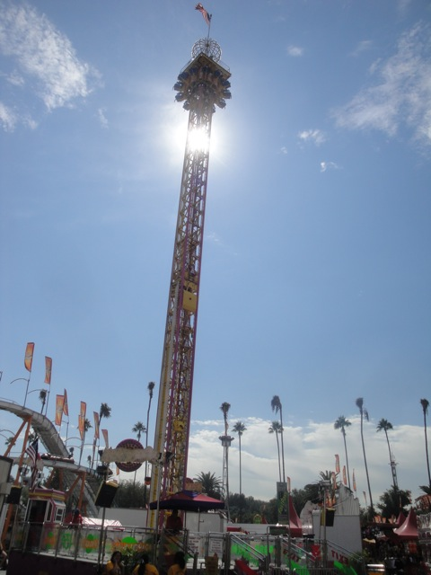
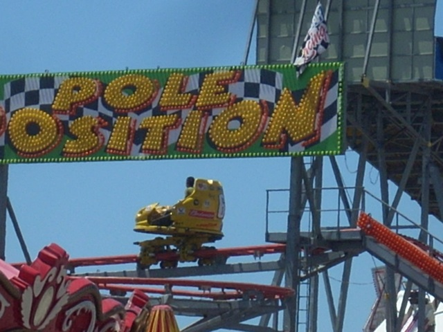
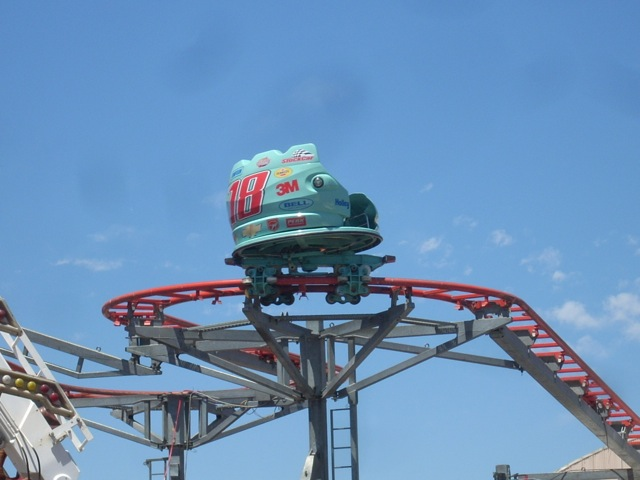
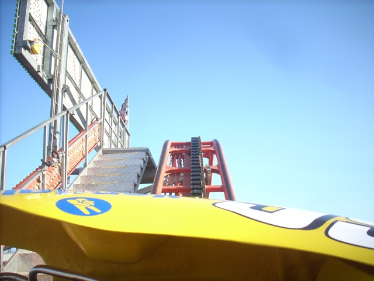
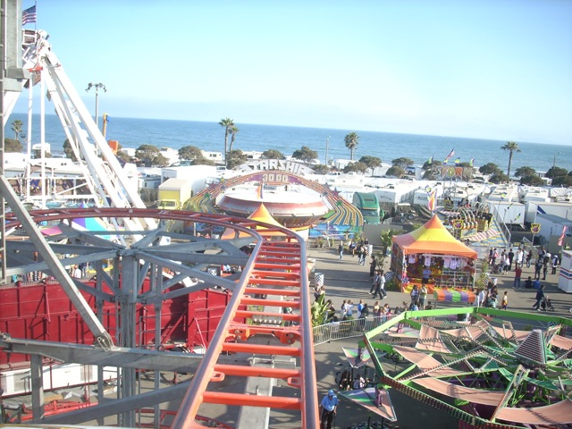
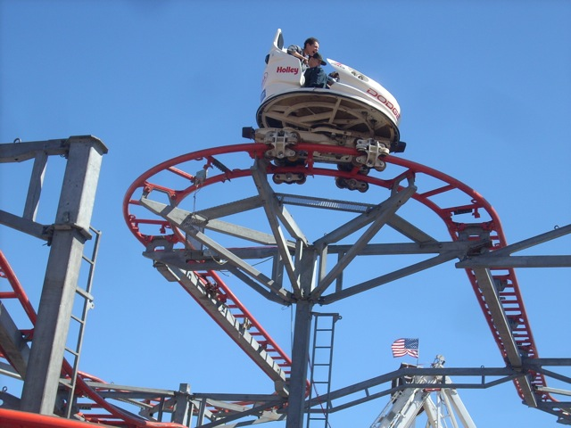
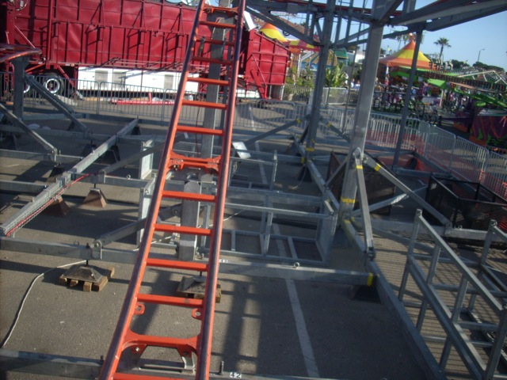
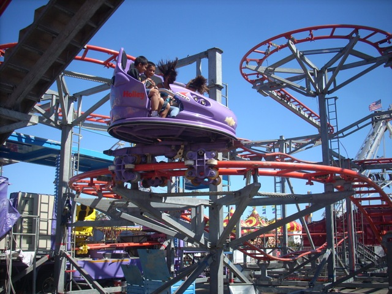
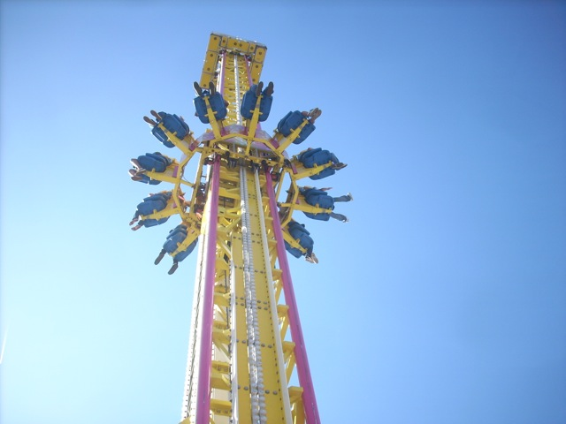

Ventura County Fair 2009
Well, that time of year has come again. The time where the Ventura County Fair comes to Ventura. And while it may be another damn Zipperless fair, It was a pretty damn good fair this year. First off, we started out on Hard Rock.
While it's not nearly as good as the Zipper, Hard Rock is still one badass flat ride. (Though they could improve it by removing the seat dividers. They don't work!)
Like many other parks out there, the Ventura County Fair has a Top Spin. (It's actually a good one.)
Hi, I'm Windsurf. I may not be nearly as crazy as some of the other flats out there, but I'm still pretty fun!
See look! I can spray water in peoples faces. Arn't I cool?
That's not a ride. It's a spaceship. Wanna go to the moon?
What the hell are you doing here? Why arn't you with all the other rides that dissapeared after 2005 fair, and of all the Lost 2005 rides to come back, Why did it have to be you!!!?
Well, If it isn't my 3rd Favorite Frisbee. I'm certainly glad to see you again.
You still run just as good as you did when I first rode you.
Continuing the tradition of good flat rides, We rode Techno Power.
New at the Ventura County Fair were Techno Power's new blue restraints. And as we all know, Blue > Pink.

Mega Drop. Serving as the Ventura County Fair's star attraction since 2006.
Mega Drop VS Xtreme. FIGHT!!!!!!!
 Such an awsome ride.
Such an awsome ride.
For lunch, we ate at Pinks. (The picture was taken at night.) If you've seen Hot Dog Paradise on the Travel Channel, then you should know what Pinks is.
Hey, these Chilli Cheese Fries are pretty damn good. (And pretty damn filling as well.)
After eating Chilli Cheese Fries, what else do you do but go Bungee Jumping. (And yes, I joined Cody in Bungee Jumping this year.)
Don't believe me, there's your proof.
 "Oh Sh*t!"
"Oh Sh*t!"
Hey, It's better than both Dive Devil and the Skyscraper @ PNE Playland.
"Don't you dare snap me back in the air Bungee Cord!!! I have to go get my hat!!!!!"

Thanks to eating Chilli Cheese Fries, Bungee Jumping, and running 10 miles before coming here, Cody needed to go on something dull and boring so he could wake up. (It may sound weird, but that's how Cody works.)

And that's exactly what Pole Position is.

I miss Bungee Jumping.

Actually, Pole Position was running pretty good this year.

Are you taking steroids Pole Position? You seem strangly fun this year.
 I think you loosened your trims as I felt speed coming down this drop as well.
I think you loosened your trims as I felt speed coming down this drop as well.

Somebody hand me a mirror. I need to see if there's a smile on my face.

It may be running fantastic, but Sierra Sidewinder still kicks its ass.
 "Mom, I'm not going to be home for a while. I got stuck on this crappy coaster and now I might just die of boredom."
"Mom, I'm not going to be home for a while. I got stuck on this crappy coaster and now I might just die of boredom."
 Ok. Story Time. Cody and I got on the Kiddy Ferris Wheel beacuse Pole Position wasn't boring enough for him and he wanted to get shots from the top anyway. But apparently, you arn't allowed to film on the Kiddy Ferris Wheel. And here comes the ridicolous part. You can't film on the Kiddy Ferris Wheel because there are too many people around. Because the laws of Physics tell everybody that when you are taking pictures and too many people are near by, your camera will fly out of your hand and assualt random people and flying around, creating chaos, and when we all know that when it flys back in your hand, you will end up catching AIDS. Pathetic. Even Cedar Point knows that that is bullsh*t. Then again, I don't really think he is concerned about there being too many people around. I just think he's a closet Final Destination 3 Believer.
Ok. Story Time. Cody and I got on the Kiddy Ferris Wheel beacuse Pole Position wasn't boring enough for him and he wanted to get shots from the top anyway. But apparently, you arn't allowed to film on the Kiddy Ferris Wheel. And here comes the ridicolous part. You can't film on the Kiddy Ferris Wheel because there are too many people around. Because the laws of Physics tell everybody that when you are taking pictures and too many people are near by, your camera will fly out of your hand and assualt random people and flying around, creating chaos, and when we all know that when it flys back in your hand, you will end up catching AIDS. Pathetic. Even Cedar Point knows that that is bullsh*t. Then again, I don't really think he is concerned about there being too many people around. I just think he's a closet Final Destination 3 Believer.
Up next, Oh Sh*t, Umm, I meant Oh Chute.
It's funny how this slide is alot faster, alot higher, and has WAY more people near it than the Kiddy Ferris Wheel, and yet, I'm allowed to film on it.
Well, since Cody needed more boring rides and wasn't at the fair last year, I decided to ride with Cody so he could get his Wacky Worm Credit.
That's what you're going to have to go through Cody. Nervous?
Wackiness on the Wacky Worm.
Wacky Worm from the Ferris Wheel.
Oh yeah. I forgot to mention. "THE FERRIS WHEEL GREW THIS YEAR!!!!!! IT'S NO LONGER TINY!!!!!!!!!!" See this picture, this is only halfway up the Ferris Wheel!!! Compare it to the view from the top in 2007!!!
You know the Ferris Wheel is big when you can see the Ventura Pier from the top. (Well, at least big on the Ventura County Fair Scale.)
Enjoy your ride.
Mega Drop from the Ferris Wheel.
Start the celebration. We're about to ride the Pirate Ship.
You know Andrew, this Pirate Ship is only a 5 minute bus ride away from your house.
Well, that was enough boring rides for Cody. Time for something really crazy. And we all know that Spin Out is pretty crazy.
Whats that I see in the distance?
Why it's the Infamous Mega Loop. (Damn you for replacing the Zipper.)
Well the Zipper may not be at the fair this year, but at least I got to ride a Zipper in Palos Verdes a couple months ago.
You know, I never realized this until now, but Mega Loop is basically just a better version of Kamakazie. At least Mega Loop doesn't slow down at the top like Kamakazie.
Oh yeah. Also at the fair was Magnum.
It was also running really well this year. Cody and I got multiple flips in a row this year.
 While Heavy Flipping Magnum is awsome, I still prefer Xtreme.
While Heavy Flipping Magnum is awsome, I still prefer Xtreme.
Hmm. What do you know? Xtreme came from Oklahoma.

Xtreme may be better than Heavy Flipping Magnum, But Mega Drop is better than Xtreme, so that cancels out any glory Xtreme may have had before.
Since we did everything we wanted in the fair, we just marathoned marathon Mega Drop for 30 minutes until our Wristbands expired.
No caption is needed.
Wow. That's a hell of a lot of Candy. Looks like dinner is served.
By state law, all County Fairs are required to have a random faucet in the room to water their plants. Failure to do so is punishable by 24 hours of being tickled by a midget in a chicken suit. (Hey, it's not nearly as stupid as Prop 8.)
 If you want to know what sex for your feet feels like, try one of these.
If you want to know what sex for your feet feels like, try one of these.
New at the Fair for 2009 is the ever so lovely Chocolate Covered Bacon Stand.
Hey, It's not nearly as bad as you think it is.
Oh yeah. We rode Kamakazie during the day. We had fun on it.
If it's not scary in the day, what will make it scary at night?
When the sun goes down, the rides light up.
Lucky bastards. I wish I was on Mega Drop at night.
 Won't somebody please ride Windsurf? It's not that bad of a ride.
Won't somebody please ride Windsurf? It's not that bad of a ride.
We leave for the Moon at Midnight. All those who want to go better get on now.
Spinout at Night. An awsome blur of colors spinning upsidedown.
And we'll finsih off with Hard Rock Blurriness. Overall, this was a great year for the Ventura County Fair and I am really looking foreward to next years fair. (Especially since there's nothing to do in Ventura without the Fair.)
Home